| Kissin' Cousins |
The Oxford English Dictionary defines cousin as follows:
cous'in (kuzn), n. (Also first cousin) child of one's uncle or aunt; my second (third...) cousin, my parents first (second...) cousins child; my first cousin once (twice...) removed, my first cousin's child (grandchild...), also my parent's (grandparent's...) first cousin.
Put more precisely, any two persons whose closest common ancestor is (m+1) generations away from one person and (m+1)+n generations away from the other are mth cousins nce removed. Normally, 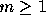 and 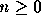 , but being used to computers counting from 0, in this problem we require 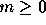 and . This extends the normal definition so that siblings are zeroth cousins. We write such a relationship as cousin-m-n.
If one of the persons is an ancestor of the other, p generations away
where  , they have a relationship descendant-p.
, they have a relationship descendant-p.
A relationship cousin- 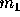 -  is closer than a
relationship cousin- 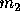 - 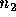
if 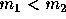 or (m1=m2 and 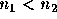 ). A relationship
descendant- is closer
than a relationship descendant- 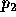 if 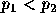 .
A descendant-p relationship is
always closer than a cousin-m-n relationship.
is closer than a
relationship cousin- 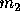 - 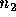
if 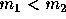 or (m1=m2 and 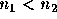 ). A relationship
descendant- is closer
than a relationship descendant- 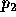 if 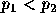 .
A descendant-p relationship is
always closer than a cousin-m-n relationship.
Write a program that accepts definitions of simple relationships between individuals and displays the closest cousin or descendant relationship, if any, which exists between arbitrary pairs of individuals.
Input consists of several datasets. Each line in the datasets begin with one of the characters #, R, F or E.
`#' lines are comments. Ignore them.
`R' lines direct your program to record a relationship between two different individuals. The first 5 characters following the `R' constitute the name of the first person; the next 5 characters constitute the name of the second. Case is significant. Following the names, possibly separated from them by blanks, is a non-negative integer, k, defining the relationship. If k is 0, then the named individuals are siblings. If k is 1, then the first named person is a child of the second. If k is 2, then the first named person is a grandchild of the second, and so forth. Ignore anything on the line following the integer.
`F' lines are queries; your program is to find the closest relationship, if any, which exists between the two different persons whose 5 character names follow the F. Ignore anything on the line following the second name. A query should be answered only with regard to `R' lines which precede the query in the input.
There will be one `E' line to mark the end of the dataset. Two consecutive E's will mark the end of the input. Ignore anything on or after these lines.
For each `F' line, your program is to report the closest relationship that exists between the two persons named aaaaa and bbbbb in one of the following formats:
aaaaa and bbbbb are descendant-p.
aaaaa and bbbbb are cousin-m-n.
with m, n and p replaced by integers calculated as defined above. If no relationship exists between the pair, your program is to output the following:
aaaaa and bbbbb are not related.
Print a blank line after each dataset.
# A Comment! RFred Joe 1 Fred is Joe's son RFran Fred 2 RJake Fred 1 RBill Joe 1 RBill Sue 1 RJean Sue 1 RJean Don 1 RPhil Jean 3 RStan Jean 1 RJohn Jean 1 RMary Don 1 RSusanMary 4 RPeg Mary 2 FFred Joe FJean Jake FPhil Bill FPhil Susan FJake Bill FDon Sue FStan John FPeg John FJean Susan FFran Peg FJohn Avram RAvramStan 99 FJohn Avram FAvramPhil E E
Fred and Joe are descendant-1. Jean and Jake are not related. Phil and Bill are cousin-0-3. Phil and Susan are cousin-3-1. Jake and Bill are cousin-0-1. Don and Sue are not related. Stan and John are cousin-0-0. Peg and John are cousin-1-1. Jean and Susan are cousin-0-4. Fran and Peg are not related. John and Avram are not related. John and Avram are cousin-0-99. Avram and Phil are cousin-2-97.
Assumption:
A person is not an ancestor of himself/herself.